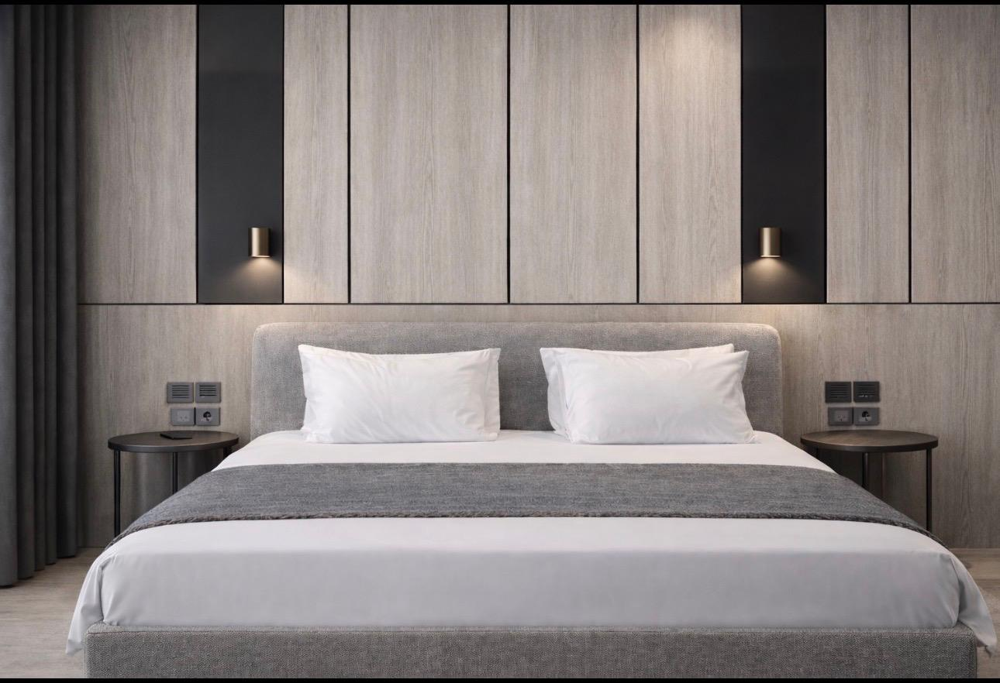

By the water
Make time for a dip in the pool or a day at the beach area.
POOL & BEACHMAISON AURA · GOLEM, ALBANIA
A place to arrive. A little longer to stay.
Discover your retreat ↗YOUR PRIVATE RETREAT
THE ART OF FEELING AT HOME
Twelve private residences on the Albanian coast. Light-filled rooms, thoughtful details and the freedom to spend each day at your own pace.

STAY A LITTLE LONGER
Morning coffee, unhurried conversations, an evening with nowhere else to be. Settle into the comfort of your own coastal home.

THE MAISON AURA FEELING
Soft textures. Warm light. A quiet sense of belonging.
BEYOND YOUR FRONT DOOR
The privacy of a residence, with resort experiences close at hand. Facilities are located in the resort attached to Maison Aura.
Make time for a dip in the pool or a day at the beach area.
POOL & BEACHLet the day unfold over a meal or a drink at the resort’s restaurant and bar.
RESTAURANT & BARFamily time at the aqua park, with parking close by for your days out.
AQUA PARK & PARKINGAsk us about facility access, seasonal availability and any applicable charges when planning your stay.
A CLOSER LOOK
GOLEM · DURRËS COAST · ALBANIA
Find us in Golem, on Albania’s Adriatic coast. The beach is a short walk from Maison Aura, with Durrës nearby for a change of scene.
GOOD TO KNOW
Maison Aura offers one- to three-bedroom layouts, with accommodation for up to six guests. Tell us your dates and group size so we can help you choose.
Contact us directly on WhatsApp with your dates and number of guests. We’ll help you with availability and residence options.
The pool, restaurant and bar, beach area, aqua park and parking are in the attached resort. Ask us for current access arrangements and seasonal availability.
Spacious layouts, kitchens and separate living areas offer room for families to settle in. Share your family’s needs when you enquire.
YOUR NEXT CHAPTER
Speak with Maison Aura directly on WhatsApp.